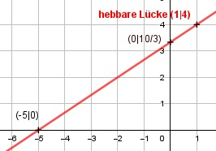

Aufgabe 117 2x2 + 8x - 10 f(x) = --------------- x ≠ 1 3x - 3 2 * (x2 + 4x - 5) 2 * (x + 5)(x - 1) f(x) = -------------------- = ------------------- 3 * (x - 1) 3 * (X - 1) 2x 10 f(x) = ---- + ---- 3 3 --> f(x) für x ≠ 1 ist eine lineare Funktion 2 f'(x) = --- 3 f''(x) = 0 f'''(x) = 0 oder Quotientenregel erste Ableitung: u = 2x2 + 8x -10, u' = 4x + 8 v = 3x - 3, v' = 3 (4x + 8) * (3x - 3) - 3 * (2x2 + 8x - 10) f'(x) = ------------------------------------------- (3x - 3)2 12x2 + 12x - 24 - 6x2 - 24x + 30 f'(x) = ---------------------------------- (3x - 3)2 6x2 - 12x + 6 6 * (x2 - 2 + 1) f'(x) = ---------------- = ---------------- (3x - 3)2 (3 * (x - 1))2 6 * (x - 1)2 2 f'(x) = ------------- = --- 9 * (x - 1)2 3 f''(x) = 0 f'''(x) = 0 Zur Beurteilung, ob f'''(x) ≠ 0 : (Begründung siehe Aufgabe 105) f'''(x) = 0 für alle x Polstellen, Nenner = 0: 3x - 3 = 0 |+3 3x = 3 |:3 x = 1 Nenner = 0 und Zähler = 2*12 + 8 * 1 - 10 = 0 --> hebbare Lücke 2 * 1 10 f(1) = ----- + ---- = 4 3 3 Definitionsbereich: -∞ < x < ∞, x ≠ 1 Wertebereich: -∞ < f(x) < ∞ Symmetrie zur y-Achse bzw. zum Punkt (0|0): 2 * (-x) 10 -2x 10 f(-x) = -------- + ---- = ----- + ---- ≠ f(x) 3 3 3 3 --> keine Achsensymmetrie -2x 10 2x 10 -f(-x) = - (----- + ----) = ---- - ---- ≠ f(x) 3 3 3 3 --> keine Punktsymmetrie Nullstellen: f(x) = 0 2x 10 f(x) = ---- + ---- = 0 |*3 3 3 2x + 10 = 0 |:2 x + 5 = 0 |-5 x = -5 Schnittpunkt mit der y-Achse: x = 0 2 * 0 10 10 f(0) = ------- + ---- = ---- 3 3 3 Sy(0|10/3) Extrempunkte: 2 f'(x) = --- 3 f''(x) = 0 --> keine Extrempunkte Wendepunkte: f''(x) = 0 f'''(x) = 0 --> keine Wendepunkte Graph:
